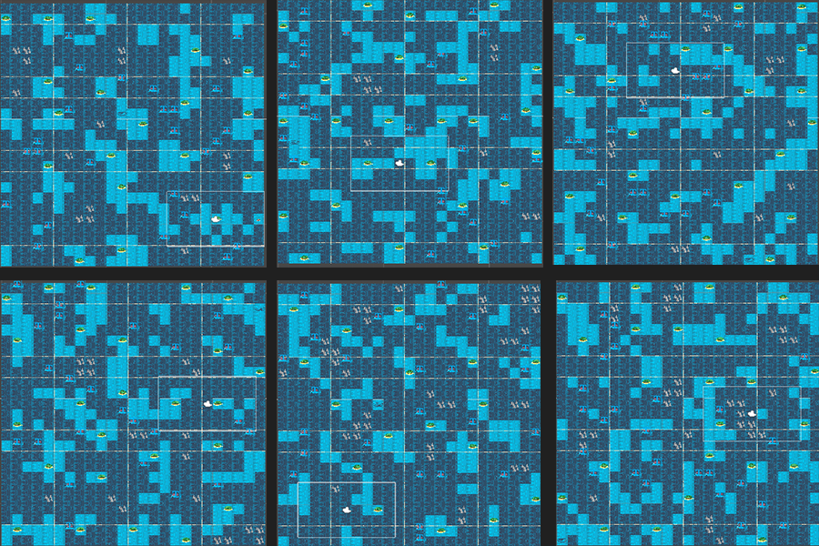
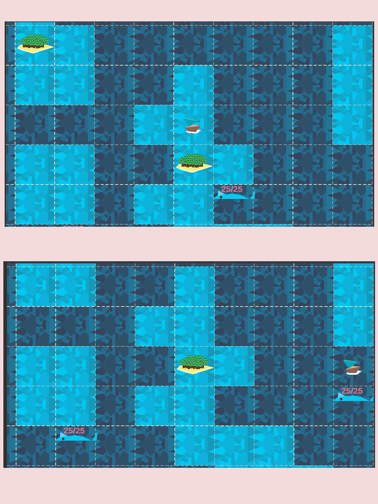
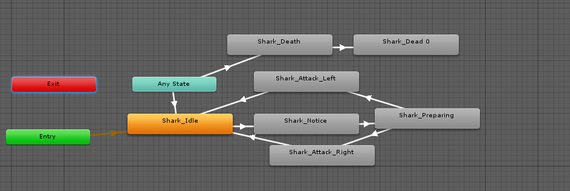
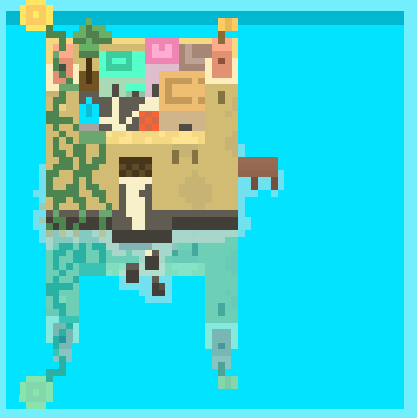
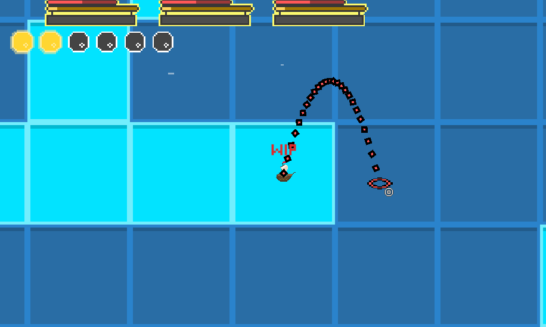

Set Sail - Procedurally generated mobile game
Github Apk fileAbout project
Set sail started as hobby project, then turned into engineering thesis to end up being hobby project again after initial release. It's a turn based game with procedurally generated maps, meaning each time gameplay looks a little bit different. It has all the basic mechanics of rpgs - stats, items, enemies, currency and events. Alongside github link for repository i hereby link the version i based thesis on in December.
 6 Procedurally generated maps
Overall project evolution has taken over 6 months. After release it was compeltely playable, but didnt avoid few bugs. First four screens present old version of the game. Since then game has taken big changes, especially in terms of optimization, since this wasn't really priority initially.
 Camera behaviour on edges of the mapI've encountered many problems, every time learning something new. Everything was a a challenge from generating the map through enemies AI and music to animations of main aspects of the game. As all assets were created personally, game might lack on appearance side, but even there a lot of work was put to make it best version possible at given time.
 Game screen
Game screen
 Enemy animations
Since then game is constantly undergoing changes and has developed into really big project that'll probably take at least another year as hobby project before going public. From time to time I release some updates on twitter.
 Example tile
 Game constantly changes